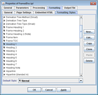
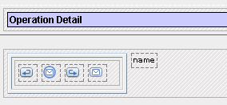
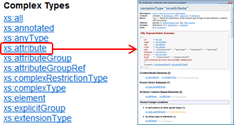
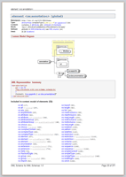
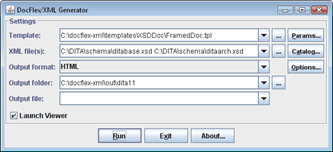

DocFlex/XML - Features
- Template-driven architecture
- Processing of XML data sources
- Formatting
- Insertion of images
- Hypertext
- Output formats
- Generator GUI
- Ready template applications
- Integrations
Template-driven architecture
Documentation Generators as Template Sets
Actual doc-generators are created as sets of special templates,
executed by the template processor.
The templates are effectively programs that implement the entire generation of the documentation output.
|
Here, the word “template” is not good to describe what this actually is.
(We just haven't found a better term).
DocFlex/XML templates are rather a mixture of what is traditionally called “templates”
and “scripts”.
For more details, please see: DocFlex Technology | What are Templates?
|
There are basically four kinds of templates (or rather roles which they can play):
- Document templates that generate the whole documents (e.g. HTML files).
- Fragment templates that generating parts/fragments of the documents.
-
Procedure templates, which generate nothing by themselves, but may be used for some preparation
(e.g. loading referenced XML files, creating element maps, etc.) or to call the document templates
(particularly when the output documentation has no obvious root).
-
Main templates, which start the generation of the entire documentation.
All those templates may call each other (and even in different roles).
The main templates are those specified to the generator
(only one at a time). A template set may include several main templates
to generate different kinds of documentation (e.g. single file, framed multi-file, etc.)
Template Designer
Although templates are stored as plain-text files (with an XML-like format),
they are not supposed for editing manually.
Rather, a special graphic Template Designer must be used,
which visualizes templates in the form of components
they are made of.
 |
|
This screenshot shows the “portType.tpl” template (from WSDLDoc template set)
open in the Template Designer (click to see in full size).
The left pane represents the structural components called sections,
which are responsible for most of data processing as well as the generation of
integral features of the output (such as paragraphs, tables, lists etc).
The right pane represents the components called controls,
which generate particular content details (e.g. text, images, table cells etc).
Controls are visualized in a form resembling the output they generate.
|
Template Processor (Generator)
This is the most crucial and sophisticated part of the whole DocFlex/XML system.
It takes on input:
-
The specified XML files, which constitute the data source.
-
The main template (the entry point of the template set).
-
The XML Type associated with the template set.
It provides the structure / data type information about the input XML files.
-
XML catalogs that are used to resolve XML file references.
The template interpreter uses template components
and their properties
as instructions and generates the output documentation by them (from the data found in the XML files).
On the way, it may load more XML files referenced from those being processed.
The output generator is actually an interchangeable part, which has separate implementations for
each supported output format.
Which particular output format will be used is specified as the option.
Together the template interpreter and all output generators represent a single functional unit,
which is called also “DocFlex/XML Generator” (or simply “generator”).
It is run from the Java command line as a separate Java application
and controlled by lots of options.
Alternatively, most of these settings can be specified in a
Generator GUI interactively.
Its main dialog is shown on the following screenshot:

For further details, please see:
DocFlex/XML | Documentation | Running Generator
Template Parameters
Since all the content and formatting of the generated documentation is programmed entirely in
templates, what in ordinary doc-generators are command-line options
now simply become template parameters.
The parameters are defined and accessed in templates to control
dynamic properties
of template components
(or pass data to them).
They may be of various data types including list parameters,
which allow passing a vector of values associated with the same parameter name.
Because template parameters are easy to introduce and support in templates
(most of time actually takes writing their descriptions), a large template application
(like XSDDoc) may have hundreds of parameters.
This allows adjusting the generated documentation within a wide range of possibilities
without changing the templates.
However, it also creates two problems:
- How to find and set a necessary parameter quickly?
- How to avoid settings lots of related parameters when just a few features need to be changed?
Those problems are solves as follows:
-
All template parameters are organized in the form of a tree that can be easily navigated
in the Parameter Inspector
(shown on the right screenshot below), which is a part of the generator GUI.
-
The parameters can be set to their default values, which may be not only constants
but also calculated dynamically from the values of other parameters.
That effectively allows you to set many related parameters at once just by setting only
a few most important of them.
On the left screenshot you can see how parameters are defined in a template.
On the right is the Parameter Inspector
created from those definitions (click on each screenshots to enlarge):
Processing of XML data sources
Any number of input XML files with different structure
A template application may process (take data from) any number of XML files
with different structures (e.g. WSDL+XSD).
The input XML files can be both specified initially as the
generator arguments
and also loaded dynamically by the templates according to the data being processed.
All XML files as a single virtual XML document
All open XML files are represented together in the form of a single tree structure (similar to XML
DOM). That virtual representation,
called “XML DSM” (or XML Data Source Model),
in turn, consists of abstract DSM elements and
DSM attributes.
Some of them mirror real XML elements and attributes found in the open XML files.
Others (called pseudo-elements)
represent all kinds of non-element/attribute nodes found in XML DOM
(such as TEXT-nodes, XML comments, processing instructions etc.) as well as each XML file as a whole.
On top of the tree is a special pseudo-element
#DOCUMENTS
that represents all XML files together.
|
In context of the whole DocFlex Technology,
the XML DSM is a single unified representation
of the entire multi-files XML data source, with which a particular template application works.
It is created and maintained by the XML DSM Driver, a DocFlex/XML module, which takes on inputs XML files
and converts them into the branches of the XML DSM tree.
|
XML Schema-driven processing
W3C XML schemas play crucial role in processing of input XML files.
Each template application is designed for a certain set of XML schemas, which describe all possible XML
files the application may process (except some trivial cases, for instance, the reproducing of raw XML;
see XMLDoc).
During the processing each input XML file is associated with some of those XML schemas
and each XML element becomes uniquely connected to a certain <xs:element> from it.
That is used to:
-
Determine the data types of the values of XML elements/attributes, which allows processing them accordingly.
-
Know all possible element children, which helps to resolve various complex queries.
-
In addition, all XSD types (i.e.
<xs:simpleType>/<xs:complexType>
components), from which the <xs:element>
is derived, also become associated with the XML element.
That makes possible to search and iterate by those XSD types -- the abstract entities not even found
in the XML files themselves!
The collection of XML schemas, on which the template application is based, constitutes an XML Type.
In effect, this is a logical description of the whole XML DSM,
which drives the entire processing!
Example:
See also:
DocFlex/XML | Documentation | Designing Templates | Defining XML Type
Data mining by Location Paths / Location Rules / Element Maps
Most of data mining and retrieval is based on Location Paths / Location Rules,
which is a developed by us extension of XPath.
This is complemented also with the specifically adapted hash-maps (called “element maps”)
that serve the role of indexes.
The element maps are particularly important in finding XML elements referenced by qualified names
(e.g. from various xs:QName attributes), which is typical, for instance, in XSD/WSDL files.
Example:
On the following screenshot you can see a set of
Location Rules
to collect ancestor types (i.e. XML elements representing them) for a
Type Derivation Tree
in XML schema documentation (click to enlarge):
 |
|
Here, the
Location Rules
are specified among the properties of the
Element Iterator section.
Each rule corresponds a particular type derivation method available in
XSD.
The rules are interpreted against a given XSD type, which produces a sequence of all ancestor types
starting from that initial type itself (the first rule just includes it in the sequence).
Then, the iterator prints the collected sequence in reverse order as a tree:

|
Support of XML catalogs
XML Catalogs
are special XML files that define redirections of certain URLs/URIs to other URLs/URIs.
|
An XML file may contain references to other XML files, which are required for its processing
(for instance, this is widely used in XML schemas).
Those references are typically expressed as a file URL, which is the address where the file should be found.
But the referenced file may not necessary exist at that address or the provided location
is undesirable or impossible to access. There may be a local copy of the same file, which can be equally used.
But how to tell the XML processor to use that local copy instead of the original one?
When the XML processor is aware of an XML catalog containing a mapping of the original URL
to the local one, the requested file will be automatically loaded from the new location.
|
DocFlex/XML supports XML catalog files in
OASIS XML Catalogs v1.1
format.
XML catalogs can be used in processing of input XML files, for which they should be
specified with
-xmlcatalog option
or in a special dialog (part of the generator GUI):

Additionally, XML catalogs are used in definitions of XML Types based on multiple XML schemas
(see xsd.catalogs config property).
For more details, please see:
DocFlex/XML | Documentation | Installation / Configuration Files | XML Catalogs
Formatting
WYSIWYG capabilities of template components
All formatting of the generated output is specified as
properties of
template components.
In Template Designer, this is visualized
in a form resembling the output those components generate.
On the following screenshot you can see how the generation of summary table is programmed:

In that way the following formatting features are supported:
- text formatting: fonts, colors, borders
- paragraph formatting: margins, pagination control, borders, colors
- border formatting: styles (solid, double, dashed, dotted), thickness, colors
- tables: arbitrary cell layouts, borders, nested tables
- lists: bulleted, numbered, delimited
- document fields (RTF): page number, number of pages, TOC, etc.
- page formatting: size, orientation, margins, headers/footers
During the generation,
the formatting properties of components
are rendered with appropriate features available in the selected output format.
Formatting styles
Formatting properties of
template components
can be defined and stored independently of
components themselves, in special definitions called template formatting styles:

Basically, the template formatting style is a bunch of component formatting properties, which is given a certain name:
By that name the style can be assigned to any component in the template.
When a component has a formatting style, those formatting properties not specified on the component directly
are inherited from the style.
Formatting styles are template local things.
That is, they are not imported from somewhere outside.
But when a template is called from another template, the styles defined in the caller template will
override the equally named styles defined in the called one.
When multiple templates are called one from another, that will work in a chain.
So, the styles defined in the main template will override any equally
named styles defined elsewhere.
As a whole, formatting styles behave as additional template parameters
passed implicitly by their names.
Custom CSS rules / CSS file
In case of HTML output, DocFlex support the traditional way of styling
the generated documentation through customizing the CSS style sheet.
It is done via the named CSS rules
generated from template formatting styles.
On the following screenshots you can see the same documentation
with default (left) and custom (right) CSS. Click on each screenshot to see the real HTML:
For further details, please see:
DocFlex Technology | Documentation | Usage of CSS in generated HTML
Processing of XHTML markup
The XHTML tags can be recognized at specific locations of XML documents
(for instance, within <xs:documentation> elements of XSD files).
This must be programmed entirely in a template,
which converts all XHTML tags to normal HTML tags (e.g. by removing 'xhtml' namespace prefix from the tag names).
Further, everything will be processed by the generator itself as embedded HTML.
|
|
|
This is a demo of what can be achieved by usage of XHTML in XML schema annotations.
On the left you can see the XML source of an XML schema, whose annotations are heavily laden with XHTML markup (including insertion of images).
On the right is the documentation generated by that schema.
Click on each screenshot to see the actual HTML.
In this case, the XHTML tags are processed in
XSDDoc/lib/ann/annotation.tpl
template, which also takes care of images (inserted with <img> tags); they need to be copied to the documentation destination directory.
|
See also:
XSDDoc | FAQ | How to format my comments using XHTML?
Rendering of embedded HTML
This means interpreting in the generated output the user HTML/XHTML tags embedded in text data (e.g. annotations).
In case of HTML/XHTML output, little needs to be done (if only fixing wrong HTML markup or converting it to XHTML).
However, in case of RTF, the embedded HTML needs to be fully parsed and interpreted with the corresponding formatting features
available in RTF, at that this everything must be integrated with the formatting imposed by the settings in templates.
That is supported for almost all HTML tags practically usable in documentation comments (including inserting of images):
| Text |
<b>,
<strong>,
<i>,
<em>,
<code>,
<tt>,
<u>,
<s>,
<strike>,
<sub>,
<sup>,
<font>,
<br>
|
| Paragraphs |
<p>,
<center>,
<div>,
<pre>,
<h1>,
<h2>,
<h3>,
<h4>,
<h5>,
<h6>,
<blockquote>
|
| Lists |
<ul>,
<ol>,
<li>,
<dl>,
<dt>,
<dd>
|
| Table |
<table>,
<tr>,
<td>,
<th>
|
| Other |
<hr>,
<img>,
<a>...</a>
|
Example:
|
|
|
These are screenshots taken from two RTF documentations generated by XML schemas with intensive usage of user XHTML markup in annotations.
On the left is the same XML schema as in the demo above.
For comparison, the HTML version of the same page you can see
here.
The XML schema on the right is this one:
http://www.w3.org/2001/xml.xsd
|
Insertion of images
Static Images
When the image file is already known at the time of template design (e.g. various icons),
it can be specified directly in the template
using Image Control.
Then, such an image is instantly displayed in the designer pane (along with other controls):

Dynamic Images
It is also possible that the image source becomes known only during the generation
(according to the data being processed). This includes:
- Arbitrary files, URLs or Java resources
- Binary data (base64- or hex-encoded) found in XML files
Such images can be also inserted in the output
using Image Controls.
Element Images
Some XML elements may have special depiction (or diagrams) attached to them.
For instance, an element in XML schema file that defines a particular XSD component
may be associated with a diagram showing the content model or the derivation of that component.
Such depictions, called “element images”,
can be easily inserted in the generated output using
Image Controls.
Example:
On the left screenshot you can see
diagram.tpl
template (from
XSDLDoc template set),
which prints a component diagram section. The diagram is inserted in the output via
the Image Control
specified to generate “element image”.
The right screenshot shows a piece of output produced by this template:
XHTML Images
Independently of what is specified about images in templates, they may come also from
XHTML tags found in input XML files.
When some XML elements (e.g. <xs:documentation> in XSD files)
may include XHTML tags specifically processed
by a given template set, images can be inserted using
<img> tags.
Example:
|
<xs:annotation>
<xs:documentation xmlns="http://www.w3.org/1999/xhtml">
The "Valid XHTML 1.0" Icon:
<p/>
<img src="http://www.w3.org/Icons/valid-xhtml10.png"/>
</xs:documentation>
</xs:annotation>
|
After processing such an annotation, the generator will produce the following fragment of HTML:
The "Valid XHTML 1.0" Icon:

|
Supported Image Formats
DocFlex does not generate images by its own. Any images must either
be prepared beforehand or come from various external sources.
However, DocFlex does need to read images in order to display them in
Template Designer or, at least, to obtain some of their properties
necessary to insert the image correctly in the generated output.
The following formats of incoming images are supported:
GIF, PNG, JPG, WMF, EMF, BMP
Hypertext
Cross-Reference Links
Cross-links are produced by matching sets of special keys generated
for both link source and destination (target). The keys represent actual data being linked.
Their generation is specified in templates along with the generation of the
corresponding pieces of output.
Example:
Suppose we need to generate a list of some components and link its items to the corresponding component details:

The list is generated by a template section like the one shown below on the left screenshot.
Each list item is produced by the Data Control (selected)
specified to print the component name.
The hyperlink generation is defined here in the Data Control's properties (right screenshot).
It is determined by a pair of keys: {contextElement.id, "detail"}.
The first key 'contextElement.id' represents the component itself
(it's the unique ID of the DSM element representing the component).
The second key is the string "detail". It says that what we want to link to is the component's entire details.
This is needed because there may be other sections in the documentation dedicated to the same component, which may be linked to as well
(including some subsections within the detail).
The component detail is generated by the template shown below (left screenshot).
The link target is defined in the template properties (right screenshot).
It's again determined by the same pair of keys: {contextElement.id, "detail"}.
Such definitions allow the generator to create hyperlinks automatically.
Each time the sets of keys produced by some possible link source and destination are matching, the actual hyperlink is generated.
In that way anything can be cross-linked together.
At that, if a particular set of keys cannot be matched, an alternative set of keys can be
specified as well. That means, when the primary target is absent, the link can go to some alternative
location related to the link source.
External Links
Similar to cross-links can be programmed the generation of outgoing hyperlinks to any external URLs (left screenshot).
The link URL is produced by an expression specified in the properties of the link definition (right screenshot):
The incoming hyperlinks from external pages into the generated documentation can be supported as well.
Each hypertext target (anchor) is generated by a definition like shown below (left screenshot). It is specified in the properties of the component
whose output is targeted. Typically, the anchor name is generated automatically and, therefore, meaningless.
But it can be any predefined string generated by an expression specified in the properties
of the target definition (right screenshot below), which can be used in the URL of the incoming link.
Element Image Maps
As element images are typically diagrams, they may require a complex set of hyperlinks
assigned to particular image areas. That is called “image map”.
Generic image maps, which associate the image areas with particular DSM elements
(representing something depicted in those areas),
come from the data source along with the element images themselves.
But those associations need to be converted into actual hyperlinks going to the corresponding sections of the documentation.
 |
|
That is programmed in properties of the Image Control
(that inserts the element image) as shown on the screenshot.
It looks the same as a definition of ordinary cross-link.
The difference is that it is interpreted against every image area, so that the DSM elements
associated with that area is made the generator context element and the hyperlink is generated by it.
In that way each image area gets its actual hyperlink.
|
Hyperlinks in Different Output Formats
Basically, hyperlinks can be generated in all output formats (included even plain text).
However, there are some specifics:
| Format
| What's special
|
|
HTML
|
Hyperlink Title
It is a small text generated by a “Link Tile” expression specified in the properties of the hyperlink definition.
In HTML, hyperlink titles are set using title attribute, like this:
<a ... title="link tooltip text"> ... </a>
Most browsers interpret it as a hyperlink tooltip (a tiny window with the text that appears near the hyperlink when the mouse cursor is moved over it):

|
|
RTF
|
Page Number References
RTF supports similar hyperlinks as HTML.
But this is good in electronic form.
Once you have printed something on paper, you cannot click on it.
So, how to navigated the printed documentation?
In RTF, cross-links can be represented also in the form of page number references,
which is programmed as follows.
A Data Control is specified in a template:
 to generate a “Page Number” document field:
to generate a “Page Number” document field:
 The hypertext tab is specified the same as in case of cross-link:
The hypertext tab is specified the same as in case of cross-link:

That's all. The generated RTF will look as on this page (in square brackets you see page number references; click to enlarge):

|
|
TXT
|
See: Images and hyperlinks in plain-text output
|
Output formats
HTML 4.01 / XHTML 1.0
Both framed multi-file and single-file output can be generated.
Almost all formatting is expressed with CSS.
It is possible also to replace some of the generated CSS rules with custom ones
(see DocFlex Technology | Documentation | Usage of CSS in generated HTML).
RTF
version 1.6 - supported since Word 2000; can be further converted to PDF
TXT (plain text)
You can use plain-text output to generate documentation (or any other sort of output)
in formats not supported directly by DocFlex.
That is possible only when such a format is eventually plain-text based (not binary).
But that's the case for probably all modern formats (e.g.
TeX,
DITA,
JSON
etc).
Of course, you will need to specify in templates all necessary markup (tags, control words etc.)
specific for that format.
Images and hyperlinks in plain-text output
It may sound odd. What images and hyperlinks can exist in plain-text files?
Yet, plain-text output may be just a base layer for other file formats, for instance DITA, which is an XML-based markup.
There, both images and hyperlinks do exist and are required.
The following functionality will allow you to use plain-text output capability of DocFlex/XML
to generate some full-blown complex formats even when they are not supported by DocFlex/XML directly.
Images
In plain-text mode, an Image Control
will produce the same image file (according to its setting).
However, in addition, it also emits into the main output the image file's relative pathname.
That pathname is calculated against the main file's location and the name-separator is UNIX style ("/").
In a template, you can surround the Image Control
with other Text Controls generating some markup,
so everything would produce both the image file and the image tag for it in the main output.
Hyperlinks
You can generate cross-hyperlinks in plain-text files too. This equally includes the hyperlinks from images
(the imagemaps).
What exactly a hyperlink is depends on the final format you generate using the plain-text output.
DocFlex/XML just provides the necessary functionality to find the things you want to link from and to.
This is implemented in the form of new
FlexQuery functions and GOM types/properties
("GOM" stands for Generator Object Model):
| Function/Type/Property
| Description
|
findHyperTarget()
|
Finds a hyperlink target matching the specified set of keys that may exist anywhere
in the whole generated documentation. Returns a GOMHyperTarget object
describing the target.
|
GOMHyperTarget
|
Provides information about a hyperlink target.
This includes the output file containing the target and the target name.
|
getElementImageMapAreas()
|
Returns all hypertext imagemap areas of the element image
associated with the specified element.
The function returns an array of GOMImageMapArea objects.
|
GOMImageMapArea
|
Represents a single area in the hypertext imagemap of an element image.
This includes the area bounds (rectangle) and the referenced GOMElement.
|
GOMElement.hasImage
|
Indicates whether the element has a certain image representation (element image).
|
More information about these functions and types you can find in the
Template Designer | Help | Assistant:
- Functions | By Category | Hypertext Functions
- Generator Object Model | Object Types
Generator GUI
Why generator GUI?
A documentation generator implemented as
{DocFlex/XML Generator + template set}
is controlled by a lot of settings, which include:
Of course, all such settings can be assigned using
options
on the generator command line
(most, actually, have their default values).
But there may be so many of them!
So, besides command line options, DocFlex/XML Generator provides a more user-friendly way
to specify everything interactively -- the Generator GUI.
Generator Dialog
When no
-nodialog
option is specified on the generator command line,
by default, the following
Generator Dialog is invoked
(click to enlarge):
|  |
|
Here, you can fill in all required settings.
The <Params> button invokes the
Parameter Inspector,
where you can edit all
parameters of the specified main template.
In a special dialog invoked by
the <Catalog> button, you can add XML catalogs
that will be used during processing of input
XML file(s).
The <Options> button invokes the
Option Inspector corresponding the selected
Output format.
When all settings are prepared, you can start the generation by clicking <Run> button.
Then, the generator dialog will transform itself to show the generation progress.
You can stop the generation at any moment by clicking <Cancel> button.
Once the generation has finished (or cancelled), the generator dialog transforms itself back
into its initial state.
|
|
 |
Template Parameter / Output Format Option Inspectors
The additional settings, such as template parameters and output format options
can be assigned in the special property inspector dialogs invoked by clicking the buttons on the right
(click to enlarge):
Here you can edit the parameter or option values according to their data types.
The bottom panel in the inspector dialog shows the HTML-preformatted description
of each parameter or format-specific generator option.
For further details, please see:
DocFlex/XML | Documentation | Running Generator | Generator GUI
Ready template applications
 |
|
Allows you to compile any number of generic XML files into a web-ready HTML or printable RTF documentation
with the optional inclusion of a namespace binding report that shows which namespace prefixes are bound
to which namespace URIs and where.
On the left screenshot you can see a demo documentation generated with
XMLDoc (click to view the real HTML).
For further details, please see: DocFlex/XML | Sample | XMLDoc
|
 |
|
Implements a very powerful XML Schema Documentation Generator
able to produce both multi-framed Javadoc-like
HTML and printable
RTF documentation.
It supports also the integrations with both
XMLSpy and Oxygen XML Editor,
which allow you to insert automatically the XSD diagrams
produced by either of those systems into the XML schema documentation
generated by XSDDoc
(with the full support of diagram hyperlinks).
On the left screenshot you can see a demo documentation generated with
XSDDoc (click to view the real HTML).
For further details, please see: DocFlex/XML | XSDDoc
|
") |
|
This template set implements a combined WSDL/XSD documentation generator that will allow you
to document both WSDL and XML schema (XSD) files as well as any interconnections between them.
It supports also the integrations with both
XMLSpy and Oxygen XML Editor,
which automatically insert the XSD diagrams
produced by either of those systems into the documentation generated by
WSDLDoc
(with the full support of diagram hyperlinks).
On the left screenshot you can see a demo documentation generated with
WSDLDoc (click to view the real HTML).
For further details, please see: DocFlex/XML | WSDLDoc
|
Integrations
You can easily integrate DocFlex/XML generator
(template interpreter) with Apache Ant
automated build system. No special plugin is required!
For more details, please see:
DocFlex/XML | Integrations | Apache Ant.
You can equally run DocFlex/XML generator
from your Maven build.
For this, there is a special “DocFlex/XML Maven Plugin”.
For more details, please see:
DocFlex/XML | Integrations | Apache Maven.
 |
|
The integration of DocFlex/XML with Altova XMLSpy
(see http://www.altova.com/xmlspy/)
allows you to automatically insert graphic diagrams produced by XMLSpy
into the documentation generated by
XSDDoc/WSDLDoc
(with the full support of diagram hyperlinks).
On the left you can see an XML schema documentation
with XSD diagrams generated by XMLSpy (click on the screenshot to view the real HTML).
For more details, please see:
DocFlex/XML | Integrations | XMLSpy.
|
 |
|
The integration of DocFlex/XML with Oxygen XML Editor
(see http://www.oxygenxml.com)
allows you to automatically insert graphic diagrams produced by OxygenXML
into the documentation generated by
XSDDoc/WSDLDoc
(with the full support of diagram hyperlinks).
On the left you can see an XML schema documentation
with XSD diagrams generated by OxygenXML (click on the screenshot to view the real HTML).
For more details, please see:
DocFlex/XML | Integrations | Oxygen XML.
|
Copyright© 2014 Filigris Works, Leonid Rudy Softwareprodukte. All rights reserved.
To contact us, please visit
www.filigris.com or e-mail to: contact@filigris.com